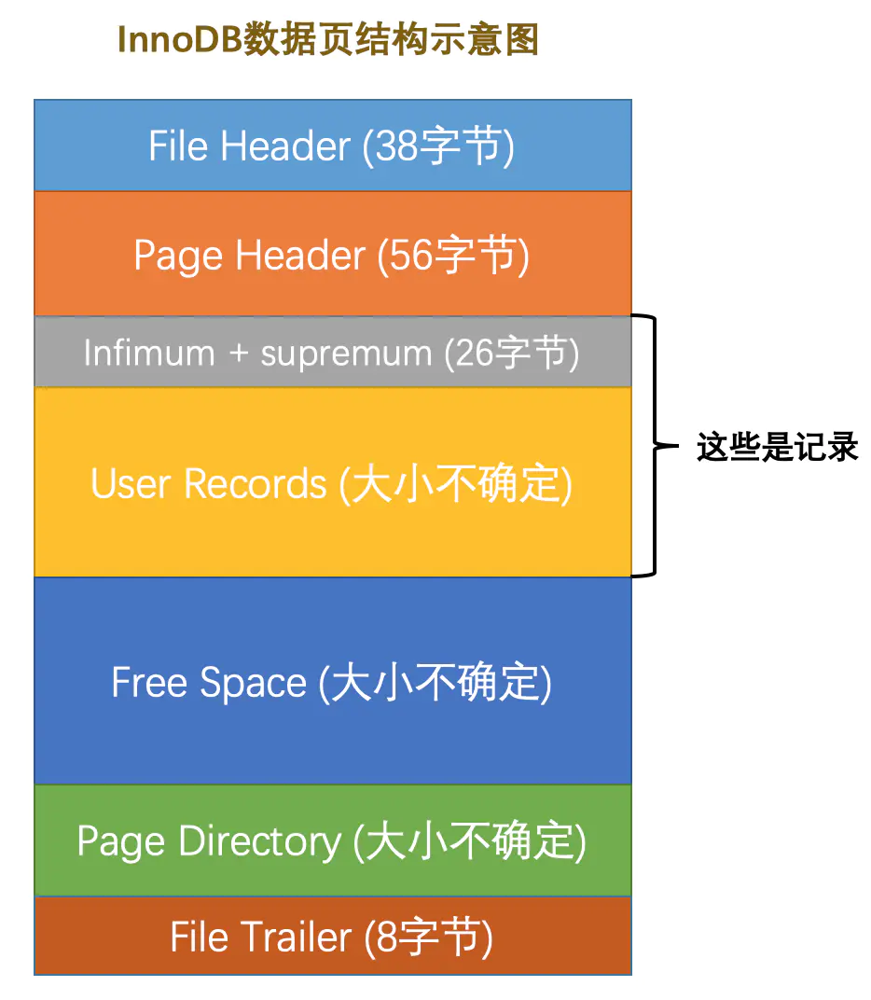

InnoDB数据页结构
标签： MySQL是怎样运行的
不同类型的页简介
前边我们简单提了一下页的概念，它是InnoDB管理存储空间的基本单位，一个页的大小一般是16KB。InnoDB为了不同的目的而设计了许多种不同类型的页，比如存放表空间头部信息的页，存放Insert Buffer信息的页，存放INODE信息的页，存放undo日志信息的页等等等等。当然了，如果我说的这些名词你一个都没有听过，就当我放了个屁吧～ 不过这没有一毛钱关系，我们今儿个也不准备说这些类型的页，我们聚焦的是那些存放我们表中记录的那种类型的页，官方称这种存放记录的页为索引（INDEX）页，鉴于我们还没有了解过索引是个什么东西，而这些表中的记录就是我们日常口中所称的数据，所以目前还是叫这种存放记录的页为数据页吧。
数据页结构的快速浏览
数据页代表的这块16KB大小的存储空间可以被划分为多个部分，不同部分有不同的功能，各个部分如图所示：

从图中可以看出，一个InnoDB数据页的存储空间大致被划分成了7个部分，有的部分占用的字节数是确定的，有的部分占用的字节数是不确定的。下边我们用表格的方式来大致描述一下这7个部分都存储一些啥内容（快速的瞅一眼就行了，后边会详细唠叨的）：
| 名称 | 中文名 | 占用空间大小 | 简单描述 |
|---|---|---|---|
File Header | 文件头部 | 38字节 | 页的一些通用信息 |
Page Header | 页面头部 | 56字节 | 数据页专有的一些信息 |
Infimum + Supremum | 最小记录和最大记录 | 26字节 | 两个虚拟的行记录 |
User Records | 用户记录 | 不确定 | 实际存储的行记录内容 |
Free Space | 空闲空间 | 不确定 | 页中尚未使用的空间 |
Page Directory | 页面目录 | 不确定 | 页中的某些记录的相对位置 |
File Trailer | 文件尾部 | 8字节 | 校验页是否完整 |
!小贴士：
我们接下来并不打算按照页中各个部分的出现顺序来依次介绍它们，因为各个部分中会出现很多大家目前不理解的概念，这会打击各位读文章的信心与兴趣，希望各位能接受这种拍摄手法～
记录在页中的存储
在页的7个组成部分中，我们自己存储的记录会按照我们指定的行格式存储到User Records部分。但是在一开始生成页的时候，其实并没有User Records这个部分，每当我们插入一条记录，都会从Free Space部分，也就是尚未使用的存储空间中申请一个记录大小的空间划分到User Records部分，当Free Space部分的空间全部被User Records部分替代掉之后，也就意味着这个页使用完了，如果还有新的记录插入的话，就需要去申请新的页了，这个过程的图示如下：
为了更好的管理在User Records中的这些记录，InnoDB可费了一番力气呢，在哪费力气了呢？不就是把记录按照指定的行格式一条一条摆在User Records部分么？其实这话还得从记录行格式的记录头信息中说起。
记录头信息的秘密
为了故事的顺利发展，我们先创建一个表：
mysql> CREATE TABLE page_demo(
-> c1 INT,
-> c2 INT,
-> c3 VARCHAR(10000),
-> PRIMARY KEY (c1)
-> ) CHARSET=ascii ROW_FORMAT=Compact;
Query OK, 0 rows affected (0.03 sec)
这个新创建的page_demo表有3个列，其中c1和c2列是用来存储整数的，c3列是用来存储字符串的。需要注意的是，我们把 c1 列指定为主键，所以在具体的行格式中InnoDB就没必要为我们去创建那个所谓的 row_id 隐藏列了。而且我们为这个表指定了ascii字符集以及Compact的行格式。所以这个表中记录的行格式示意图就是这样的：
从图中可以看到，我们特意把记录头信息的5个字节的数据给标出来了，说明它很重要，我们再次先把这些记录头信息中各个属性的大体意思浏览一下（我们目前使用Compact行格式进行演示）：
| 名称 | 大小（单位：bit） | 描述 |
|---|---|---|
预留位1 | 1 | 没有使用 |
预留位2 | 1 | 没有使用 |
delete_mask | 1 | 标记该记录是否被删除 |
min_rec_mask | 1 | B+树的每层非叶子节点中的最小记录都会添加该标记 |
n_owned | 4 | 表示当前记录拥有的记录数 |
heap_no | 13 | 表示当前记录在记录堆的位置信息 |
record_type | 3 | 表示当前记录的类型，0表示普通记录，1表示B+树非叶节点记录，2表示最小记录，3表示最大记录 |
next_record | 16 | 表示下一条记录的相对位置 |
由于我们现在主要在唠叨记录头信息的作用，所以为了大家理解上的方便，我们只在page_demo表的行格式演示图中画出有关的头信息属性以及c1、c2、c3列的信息（其他信息没画不代表它们不存在啊，只是为了理解上的方便在图中省略了～），简化后的行格式示意图就是这样：
下边我们试着向page_demo表中插入几条记录：
mysql> INSERT INTO page_demo VALUES(1, 100, 'aaaa'), (2, 200, 'bbbb'), (3, 300, 'cccc'), (4, 400, 'dddd');
Query OK, 4 rows affected (0.00 sec)
Records: 4 Duplicates: 0 Warnings: 0
为了方便大家分析这些记录在页的User Records部分中是怎么表示的，我把记录中头信息和实际的列数据都用十进制表示出来了（其实是一堆二进制位），所以这些记录的示意图就是：
看这个图的时候需要注意一下，各条记录在User Records中存储的时候并没有空隙，这里只是为了大家观看方便才把每条记录单独画在一行中。我们对照着这个图来看看记录头信息中的各个属性是啥意思：
-
delete_mask这个属性标记着当前记录是否被删除，占用1个二进制位，值为
0的时候代表记录并没有被删除，为1的时候代表记录被删除掉了。啥？被删除的记录还在
页中么？是的，摆在台面上的和背地里做的可能大相径庭，你以为它删除了，可它还在真实的磁盘上[摊手]（忽然想起冠希～）。这些被删除的记录之所以不立即从磁盘上移除，是因为移除它们之后把其他的记录在磁盘上重新排列需要性能消耗，所以只是打一个删除标记而已，所有被删除掉的记录都会组成一个所谓的垃圾链表，在这个链表中的记录占用的空间称之为所谓的可重用空间，之后如果有新记录插入到表中的话，可能把这些被删除的记录占用的存储空间覆盖掉。!小贴士： 将这个delete_mask位设置为1和将被删除的记录加入到垃圾链表中其实是两个阶段，我们后边在介绍事务的时候会详细唠叨删除操作的详细过程，稍安勿躁。 -
min_rec_maskB+树的每层非叶子节点中的最小记录都会添加该标记，什么是个
B+树？什么是个非叶子节点？好吧，等会再聊这个问题。反正我们自己插入的四条记录的min_rec_mask值都是0，意味着它们都不是B+树的非叶子节点中的最小记录。 -
n_owned这个暂时保密，稍后它是主角～
-
heap_no这个属性表示当前记录在本
页中的位置，从图中可以看出来，我们插入的4条记录在本页中的位置分别是：2、3、4、5。是不是少了点啥？是的，怎么不见heap_no值为0和1的记录呢？这其实是设计
InnoDB的大叔们玩的一个小把戏，他们自动给每个页里边儿加了两个记录，由于这两个记录并不是我们自己插入的，所以有时候也称为伪记录或者虚拟记录。这两个伪记录一个代表最小记录，一个代表最大记录，等一下哈~，记录可以比大小么？是的，记录也可以比大小，对于一条完整的记录来说，比较记录的大小就是比较
主键的大小。比方说我们插入的4行记录的主键值分别是：1、2、3、4，这也就意味着这4条记录的大小从小到大依次递增。!小贴士： 请注意我强调了对于`一条完整的记录`来说，比较记录的大小就相当于比的是主键的大小。后边我们还会介绍只存储一条记录的部分列的情况，敬请期待～但是不管我们向
页中插入了多少自己的记录，设计InnoDB的大叔们都规定他们定义的两条伪记录分别为最小记录与最大记录。这两条记录的构造十分简单，都是由5字节大小的记录头信息和8字节大小的一个固定的部分组成的，如图所示由于这两条记录不是我们自己定义的记录，所以它们并不存放在
页的User Records部分，他们被单独放在一个称为Infimum + Supremum的部分，如图所示：从图中我们可以看出来，最小记录和最大记录的
heap_no值分别是0和1，也就是说它们的位置最靠前。 -
record_type这个属性表示当前记录的类型，一共有4种类型的记录，
0表示普通记录，1表示B+树非叶节点记录，2表示最小记录，3表示最大记录。从图中我们也可以看出来，我们自己插入的记录就是普通记录，它们的record_type值都是0，而最小记录和最大记录的record_type值分别为2和3。至于
record_type为1的情况，我们之后在说索引的时候会重点强调的。 -
next_record这玩意儿非常重要，它表示从当前记录的真实数据到下一条记录的真实数据的地址偏移量。比方说第一条记录的
next_record值为32，意味着从第一条记录的真实数据的地址处向后找32个字节便是下一条记录的真实数据。如果你熟悉数据结构的话，就立即明白了，这其实是个链表，可以通过一条记录找到它的下一条记录。但是需要注意注意再注意的一点是，下一条记录指得并不是按照我们插入顺序的下一条记录，而是按照主键值由小到大的顺序的下一条记录。而且规定 Infimum记录（也就是最小记录） 的下一条记录就是本页中主键值最小的用户记录，而本页中主键值最大的用户记录的下一条记录就是 Supremum记录（也就是最大记录） ，为了更形象的表示一下这个next_record起到的作用，我们用箭头来替代一下next_record中的地址偏移量：从图中可以看出来，我们的记录按照主键从小到大的顺序形成了一个单链表。
最大记录的next_record的值为0，这也就是说最大记录是没有下一条记录了，它是这个单链表中的最后一个节点。如果从中删除掉一条记录，这个链表也是会跟着变化的，比如我们把第2条记录删掉：mysql> DELETE FROM page_demo WHERE c1 = 2; Query OK, 1 row affected (0.02 sec)删掉第2条记录后的示意图就是：
从图中可以看出来，删除第2条记录前后主要发生了这些变化：
- 第2条记录并没有从存储空间中移除，而是把该条记录的
delete_mask值设置为1。 - 第2条记录的
next_record值变为了0，意味着该记录没有下一条记录了。 - 第1条记录的
next_record指向了第3条记录。 - 还有一点你可能忽略了，就是
最大记录的n_owned值从5变成了4，关于这一点的变化我们稍后会详细说明的。
所以，不论我们怎么对页中的记录做增删改操作，InnoDB始终会维护一条记录的单链表，链表中的各个节点是按照主键值由小到大的顺序连接起来的。
!小贴士： 你会不会觉得next_record这个指针有点儿怪，为啥要指向记录头信息和真实数据之间的位置呢？为啥不干脆指向整条记录的开头位置，也就是记录的额外信息开头的位置呢？ 因为这个位置刚刚好，向左读取就是记录头信息，向右读取就是真实数据。我们前边还说过变长字段长度列表、NULL值列表中的信息都是逆序存放，这样可以使记录中位置靠前的字段和它们对应的字段长度信息在内存中的距离更近，可能会提高高速缓存的命中率。当然如果你看不懂这句话的话就不要勉强了，果断跳过～ - 第2条记录并没有从存储空间中移除，而是把该条记录的
再来看一个有意思的事情，因为主键值为2的记录被我们删掉了，但是存储空间却没有回收，如果我们再次把这条记录插入到表中，会发生什么事呢？
mysql> INSERT INTO page_demo VALUES(2, 200, 'bbbb');
Query OK, 1 row affected (0.00 sec)
我们看一下记录的存储情况：
从图中可以看到，InnoDB并没有因为新记录的插入而为它申请新的存储空间，而是直接复用了原来被删除记录的存储空间。
!小贴士：
当数据页中存在多条被删除掉的记录时，这些记录的next_record属性将会把这些被删除掉的记录组成一个垃圾链表，以备之后重用这部分存储空间。
Page Directory（页目录）
现在我们了解了记录在页中按照主键值由小到大顺序串联成一个单链表，那如果我们想根据主键值查找页中的某条记录该咋办呢？比如说这样的查询语句：
SELECT * FROM page_demo WHERE c1 = 3;
最笨的办法：从Infimum记录（最小记录）开始，沿着链表一直往后找，总有一天会找到（或者找不到[摊手]），在找的时候还能投机取巧，因为链表中各个记录的值是按照从小到大顺序排列的，所以当链表的某个节点代表的记录的主键值大于你想要查找的主键值时，你就可以停止查找了，因为该节点后边的节点的主键值依次递增。
这个方法在页中存储的记录数量比较少的情况用起来也没啥问题，比方说现在我们的表里只有4条自己插入的记录，所以最多找4次就可以把所有记录都遍历一遍，但是如果一个页中存储了非常多的记录，这么查找对性能来说还是有损耗的，所以我们说这种遍历查找这是一个笨办法。但是设计InnoDB的大叔们是什么人，他们能用这么笨的办法么，当然是要设计一种更6的查找方式喽，他们从书的目录中找到了灵感。
我们平常想从一本书中查找某个内容的时候，一般会先看目录，找到需要查找的内容对应的书的页码，然后到对应的页码查看内容。设计InnoDB的大叔们为我们的记录也制作了一个类似的目录，他们的制作过程是这样的：
-
将所有正常的记录（包括最大和最小记录，不包括标记为已删除的记录）划分为几个组。
-
每个组的最后一条记录（也就是组内最大的那条记录）的头信息中的
n_owned属性表示该记录拥有多少条记录，也就是该组内共有几条记录。 -
将每个组的最后一条记录的地址偏移量单独提取出来按顺序存储到靠近
页的尾部的地方，这个地方就是所谓的Page Directory，也就是页目录（此时应该返回头看看页面各个部分的图）。页面目录中的这些地址偏移量被称为槽（英文名：Slot），所以这个页面目录就是由槽组成的。
比方说现在的page_demo表中正常的记录共有6条，InnoDB会把它们分成两组，第一组中只有一个最小记录，第二组中是剩余的5条记录，看下边的示意图：
从这个图中我们需要注意这么几点：
-
现在
页目录部分中有两个槽，也就意味着我们的记录被分成了两个组，槽1中的值是112，代表最大记录的地址偏移量（就是从页面的0字节开始数，数112个字节）；槽0中的值是99，代表最小记录的地址偏移量。 -
注意最小和最大记录的头信息中的
n_owned属性- 最小记录的
n_owned值为1，这就代表着以最小记录结尾的这个分组中只有1条记录，也就是最小记录本身。 - 最大记录的
n_owned值为5，这就代表着以最大记录结尾的这个分组中只有5条记录，包括最大记录本身还有我们自己插入的4条记录。
- 最小记录的
99和112这样的地址偏移量很不直观，我们用箭头指向的方式替代数字，这样更易于我们理解，所以修改后的示意图就是这样：
哎呀，咋看上去怪怪的，这么乱的图对于我这个强迫症真是不能忍，那我们就暂时不管各条记录在存储设备上的排列方式了，单纯从逻辑上看一下这些记录和页目录的关系：
这样看就顺眼多了嘛！为什么最小记录的n_owned值为1，而最大记录的n_owned值为5呢，这里头有什么猫腻么？
是的，设计InnoDB的大叔们对每个分组中的记录条数是有规定的：对于最小记录所在的分组只能有 1 条记录，最大记录所在的分组拥有的记录条数只能在 1~8 条之间，剩下的分组中记录的条数范围只能在是 4~8 条之间。所以分组是按照下边的步骤进行的：
-
初始情况下一个数据页里只有最小记录和最大记录两条记录，它们分属于两个分组。
-
之后每插入一条记录，都会从
页目录中找到主键值比本记录的主键值大并且差值最小的槽，然后把该槽对应的记录的n_owned值加1，表示本组内又添加了一条记录，直到该组中的记录数等于8个。 -
在一个组中的记录数等于8个后再插入一条记录时，会将组中的记录拆分成两个组，一个组中4条记录，另一个5条记录。这个过程会在
页目录中新增一个槽来记录这个新增分组中最大的那条记录的偏移量。
由于现在page_demo表中的记录太少，无法演示添加了页目录之后加快查找速度的过程，所以再往page_demo表中添加一些记录：
mysql> INSERT INTO page_demo VALUES(5, 500, 'eeee'), (6, 600, 'ffff'), (7, 700, 'gggg'), (8, 800, 'hhhh'), (9, 900, 'iiii'), (10, 1000, 'jjjj'), (11, 1100, 'kkkk'), (12, 1200, 'llll'), (13, 1300, 'mmmm'), (14, 1400, 'nnnn'), (15, 1500, 'oooo'), (16, 1600, 'pppp');
Query OK, 12 rows affected (0.00 sec)
Records: 12 Duplicates: 0 Warnings: 0
哈，我们一口气又往表中添加了12条记录，现在页里边就一共有18条记录了（包括最小和最大记录），这些记录被分成了5个组，如图所示：
因为把16条记录的全部信息都画在一张图里太占地方，让人眼花缭乱的，所以只保留了用户记录头信息中的n_owned和next_record属性，也省略了各个记录之间的箭头，我没画不等于没有啊！现在看怎么从这个页目录中查找记录。因为各个槽代表的记录的主键值都是从小到大排序的，所以我们可以使用所谓的二分法来进行快速查找。5个槽的编号分别是：0、1、2、3、4，所以初始情况下最低的槽就是low=0，最高的槽就是high=4。比方说我们想找主键值为6的记录，过程是这样的：
-
计算中间槽的位置：
(0+4)/2=2，所以查看槽2对应记录的主键值为8，又因为8 > 6，所以设置high=2，low保持不变。 -
重新计算中间槽的位置：
(0+2)/2=1，所以查看槽1对应的主键值为4，又因为4 < 6，所以设置low=1，high保持不变。 -
因为
high - low的值为1，所以确定主键值为6的记录在槽2对应的组中。此刻我们需要找到槽2中主键值最小的那条记录，然后沿着单向链表遍历槽2中的记录。但是我们前边又说过，每个槽对应的记录都是该组中主键值最大的记录，这里槽2对应的记录是主键值为8的记录，怎么定位一个组中最小的记录呢？别忘了各个槽都是挨着的，我们可以很轻易的拿到槽1对应的记录（主键值为4），该条记录的下一条记录就是槽2中主键值最小的记录，该记录的主键值为5。所以我们可以从这条主键值为5的记录出发，遍历槽2中的各条记录，直到找到主键值为6的那条记录即可。由于一个组中包含的记录条数只能是1~8条，所以遍历一个组中的记录的代价是很小的。
所以在一个数据页中查找指定主键值的记录的过程分为两步：
-
通过二分法确定该记录所在的槽，并找到该槽所在分组中主键值最小的那条记录。
-
通过记录的
next_record属性遍历该槽所在的组中的各个记录。
!小贴士：
如果你不知道二分法是个什么东西，找个基础算法书看看吧。什么？算法书写的看不懂？等我～
Page Header（页面头部）
设计InnoDB的大叔们为了能得到一个数据页中存储的记录的状态信息，比如本页中已经存储了多少条记录，第一条记录的地址是什么，页目录中存储了多少个槽等等，特意在页中定义了一个叫Page Header的部分，它是页结构的第二部分，这个部分占用固定的56个字节，专门存储各种状态信息，具体各个字节都是干嘛的看下表：
| 名称 | 占用空间大小 | 描述 |
|---|---|---|
PAGE_N_DIR_SLOTS | 2字节 | 在页目录中的槽数量 |
PAGE_HEAP_TOP | 2字节 | 还未使用的空间最小地址，也就是说从该地址之后就是Free Space |
PAGE_N_HEAP | 2字节 | 本页中的记录的数量（包括最小和最大记录以及标记为删除的记录） |
PAGE_FREE | 2字节 | 第一个已经标记为删除的记录地址（各个已删除的记录通过next_record也会组成一个单链表，这个单链表中的记录可以被重新利用） |
PAGE_GARBAGE | 2字节 | 已删除记录占用的字节数 |
PAGE_LAST_INSERT | 2字节 | 最后插入记录的位置 |
PAGE_DIRECTION | 2字节 | 记录插入的方向 |
PAGE_N_DIRECTION | 2字节 | 一个方向连续插入的记录数量 |
PAGE_N_RECS | 2字节 | 该页中记录的数量（不包括最小和最大记录以及被标记为删除的记录） |
PAGE_MAX_TRX_ID | 8字节 | 修改当前页的最大事务ID，该值仅在二级索引中定义 |
PAGE_LEVEL | 2字节 | 当前页在B+树中所处的层级 |
PAGE_INDEX_ID | 8字节 | 索引ID，表示当前页属于哪个索引 |
PAGE_BTR_SEG_LEAF | 10字节 | B+树叶子段的头部信息，仅在B+树的Root页定义 |
PAGE_BTR_SEG_TOP | 10字节 | B+树非叶子段的头部信息，仅在B+树的Root页定义 |
如果大家认真看过前边的文章，从PAGE_N_DIR_SLOTS到PAGE_LAST_INSERT以及PAGE_N_RECS的意思大家一定是清楚的，如果不清楚，对不起，你应该回头再看一遍前边的文章。剩下的状态信息看不明白不要着急，饭要一口一口吃，东西要一点一点学（一定要稍安勿躁哦，不要被这些名词吓到）。在这里我们先唠叨一下PAGE_DIRECTION和PAGE_N_DIRECTION的意思：
-
PAGE_DIRECTION假如新插入的一条记录的主键值比上一条记录的主键值大，我们说这条记录的插入方向是右边，反之则是左边。用来表示最后一条记录插入方向的状态就是
PAGE_DIRECTION。 -
PAGE_N_DIRECTION假设连续几次插入新记录的方向都是一致的，
InnoDB会把沿着同一个方向插入记录的条数记下来，这个条数就用PAGE_N_DIRECTION这个状态表示。当然，如果最后一条记录的插入方向改变了的话，这个状态的值会被清零重新统计。
至于我们没提到的那些属性，我没说是因为现在不需要大家知道。不要着急，当我们学完了后边的内容，你再回头看，一切都是那么清晰。
!小贴士：
说到这个有些东西后边我们学过后回头看就很清晰的事儿不禁让我想到了乔布斯在斯坦福大学的演讲，摆一下原文：
“You can't connect the dots looking forward; you can only connect them looking backwards. So you have to trust that the dots will somehow connect in your future.You have to trust in something - your gut, destiny, life, karma, whatever. This approach has never let me down, and it has made all the difference in my life.”
上边这段话纯属心血来潮写的，大意是坚持做自己喜欢的事儿，你在做的时候可能并不能搞清楚这些事儿对自己之后的人生有啥影响，但当你一路走来回头看时，一切都是那么清晰，就像是命中注定的一样。上述内容跟MySQL毫无干系，请忽略～
File Header（文件头部）
上边唠叨的Page Header是专门针对数据页记录的各种状态信息，比方说页里头有多少个记录了呀，有多少个槽了呀。我们现在描述的File Header针对各种类型的页都通用，也就是说不同类型的页都会以File Header作为第一个组成部分，它描述了一些针对各种页都通用的一些信息，比方说这个页的编号是多少，它的上一个页、下一个页是谁啦吧啦吧啦～ 这个部分占用固定的38个字节，是由下边这些内容组成的：
| 名称 | 占用空间大小 | 描述 |
|---|---|---|
FIL_PAGE_SPACE_OR_CHKSUM | 4字节 | 页的校验和（checksum值） |
FIL_PAGE_OFFSET | 4字节 | 页号 |
FIL_PAGE_PREV | 4字节 | 上一个页的页号 |
FIL_PAGE_NEXT | 4字节 | 下一个页的页号 |
FIL_PAGE_LSN | 8字节 | 页面被最后修改时对应的日志序列位置（英文名是：Log Sequence Number） |
FIL_PAGE_TYPE | 2字节 | 该页的类型 |
FIL_PAGE_FILE_FLUSH_LSN | 8字节 | 仅在系统表空间的一个页中定义，代表文件至少被刷新到了对应的LSN值 |
FIL_PAGE_ARCH_LOG_NO_OR_SPACE_ID | 4字节 | 页属于哪个表空间 |
对照着这个表格，我们看几个目前比较重要的部分：
-
FIL_PAGE_SPACE_OR_CHKSUM这个代表当前页面的校验和（checksum）。啥是个校验和？就是对于一个很长很长的字节串来说，我们会通过某种算法来计算一个比较短的值来代表这个很长的字节串，这个比较短的值就称为
校验和。这样在比较两个很长的字节串之前先比较这两个长字节串的校验和，如果校验和都不一样两个长字节串肯定是不同的，所以省去了直接比较两个比较长的字节串的时间损耗。 -
FIL_PAGE_OFFSET每一个
页都有一个单独的页号，就跟你的身份证号码一样，InnoDB通过页号来可以唯一定位一个页。 -
FIL_PAGE_TYPE这个代表当前
页的类型，我们前边说过，InnoDB为了不同的目的而把页分为不同的类型，我们上边介绍的其实都是存储记录的数据页，其实还有很多别的类型的页，具体如下表：类型名称 十六进制 描述 FIL_PAGE_TYPE_ALLOCATED0x0000 最新分配，还没使用 FIL_PAGE_UNDO_LOG0x0002 Undo日志页 FIL_PAGE_INODE0x0003 段信息节点 FIL_PAGE_IBUF_FREE_LIST0x0004 Insert Buffer空闲列表 FIL_PAGE_IBUF_BITMAP0x0005 Insert Buffer位图 FIL_PAGE_TYPE_SYS0x0006 系统页 FIL_PAGE_TYPE_TRX_SYS0x0007 事务系统数据 FIL_PAGE_TYPE_FSP_HDR0x0008 表空间头部信息 FIL_PAGE_TYPE_XDES0x0009 扩展描述页 FIL_PAGE_TYPE_BLOB0x000A 溢出页 FIL_PAGE_INDEX0x45BF 索引页，也就是我们所说的 数据页我们存放记录的数据页的类型其实是
FIL_PAGE_INDEX，也就是所谓的索引页。至于啥是个索引，且听下回分解～ -
FIL_PAGE_PREV和FIL_PAGE_NEXT我们前边强调过，
InnoDB都是以页为单位存放数据的，有时候我们存放某种类型的数据占用的空间非常大（比方说一张表中可以有成千上万条记录），InnoDB可能不可以一次性为这么多数据分配一个非常大的存储空间，如果分散到多个不连续的页中存储的话需要把这些页关联起来，FIL_PAGE_PREV和FIL_PAGE_NEXT就分别代表本页的上一个和下一个页的页号。这样通过建立一个双向链表把许许多多的页就都串联起来了，而无需这些页在物理上真正连着。需要注意的是，并不是所有类型的页都有上一个和下一个页的属性，不过我们本集中唠叨的数据页（也就是类型为FIL_PAGE_INDEX的页）是有这两个属性的，所以所有的数据页其实是一个双链表，就像这样：
关于File Header的其他属性我们暂时用不到，等用到的时候再提哈～
File Trailer
我们知道InnoDB存储引擎会把数据存储到磁盘上，但是磁盘速度太慢，需要以页为单位把数据加载到内存中处理，如果该页中的数据在内存中被修改了，那么在修改后的某个时间需要把数据同步到磁盘中。但是在同步了一半的时候中断电了咋办，这不是莫名尴尬么？为了检测一个页是否完整（也就是在同步的时候有没有发生只同步一半的尴尬情况），设计InnoDB的大叔们在每个页的尾部都加了一个File Trailer部分，这个部分由8个字节组成，可以分成2个小部分：
-
前4个字节代表页的校验和
这个部分是和
File Header中的校验和相对应的。每当一个页面在内存中修改了，在同步之前就要把它的校验和算出来，因为File Header在页面的前边，所以校验和会被首先同步到磁盘，当完全写完时，校验和也会被写到页的尾部，如果完全同步成功，则页的首部和尾部的校验和应该是一致的。如果写了一半儿断电了，那么在File Header中的校验和就代表着已经修改过的页，而在File Trailer中的校验和代表着原先的页，二者不同则意味着同步中间出了错。 -
后4个字节代表页面被最后修改时对应的日志序列位置（LSN）
这个部分也是为了校验页的完整性的，只不过我们目前还没说
LSN是个什么意思，所以大家可以先不用管这个属性。
这个File Trailer与File Header类似，都是所有类型的页通用的。
总结
-
InnoDB为了不同的目的而设计了不同类型的页，我们把用于存放记录的页叫做
数据页。 -
一个数据页可以被大致划分为7个部分，分别是
File Header，表示页的一些通用信息，占固定的38字节。Page Header，表示数据页专有的一些信息，占固定的56个字节。Infimum + Supremum，两个虚拟的伪记录，分别表示页中的最小和最大记录，占固定的26个字节。User Records：真实存储我们插入的记录的部分，大小不固定。Free Space：页中尚未使用的部分，大小不确定。Page Directory：页中的某些记录相对位置，也就是各个槽在页面中的地址偏移量，大小不固定，插入的记录越多，这个部分占用的空间越多。File Trailer：用于检验页是否完整的部分，占用固定的8个字节。
-
每个记录的头信息中都有一个
next_record属性，从而使页中的所有记录串联成一个单链表。 -
InnoDB会把页中的记录划分为若干个组，每个组的最后一个记录的地址偏移量作为一个槽，存放在Page Directory中，所以在一个页中根据主键查找记录是非常快的，分为两步：-
通过二分法确定该记录所在的槽。
-
通过记录的next_record属性遍历该槽所在的组中的各个记录。
-
-
每个数据页的
File Header部分都有上一个和下一个页的编号，所以所有的数据页会组成一个双链表。 -
为保证从内存中同步到磁盘的页的完整性，在页的首部和尾部都会存储页中数据的校验和和页面最后修改时对应的
LSN值，如果首部和尾部的校验和和LSN值校验不成功的话，就说明同步过程出现了问题。


 回复
回复 1
1 回复
回复